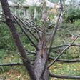
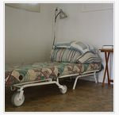
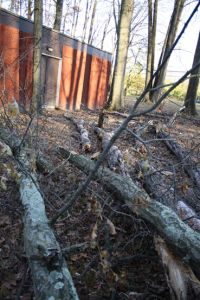
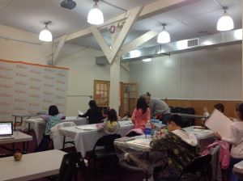
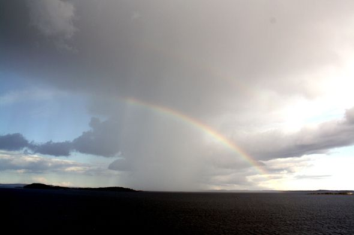

奇异恩典
没有经历过上帝奇妙恩典的人，永远都无法体会上帝是何等的伟大、信实、怜悯、慈爱、满有能力和权柄！没有经历10月29日美东“百年巨灾”的人，无法想象没有上帝的保守是多么的可怕！没有身处成百上千棵参天大树包围的居所，不可能体会当时生死一线牵的危险！没有经过一连串又一连串灾难、危机、试炼而愈加蒙福的人，怎会理解为什么我们时时刻刻，紧紧地，紧紧地抓住上帝！
我受洗成为基督徒没多久，不想以后成为一个不冷不热的老基督徒，于是向神祷告：“主啊，我（也许）会离开妳，但求妳永远都不要离开我……把我紧紧地抓住。”
十几年来，经历很多很多事情，包括2008年底至今的经济危机，莎伦画院反而加倍成长……经历了四次淹水和风灾及 无数危机、危险的试探，每一次都是我们灵命成长的台阶，每一次都是上帝更大祝福的开端。虽然，我常有犹豫、怀疑、冷淡、困惑，也常在心里向上帝问：“为什么別人住这房子就没事，我们买下来就有事？”或是“ 邻居不信上帝，甚至还比我们幸运……?”但是，上帝从来没有离开过我们！祂的恩典远远大过一切的灾祸。
第一次淹水–信心建立
刚刚搬入新居，花了三年时间把一楼装置得美轮美奂。最贵的、最舒服的都放在这里，我以为这是我一辈子的安乐窝，忘记了，我们真正的新家是在天上。
买前看房子时，看到河面离房子很高：“不会淹水吧？除非是世界末日。”我说。忘记圣经说，狮子时时刻刻都在找寻机会要吞食我们。不属于淹水区，所以政府不许保险公司卖淹水保险给我们。住附近的两位家长提醒我，几年前，百年一遇的暴雨，曾使这一排临河的路面都淹了大水。我们没有放心上，何况已住进去了，而且风景实在诱人。常被表面的现象所迷惑，我已经算是个不太受表面现象影响，凡事追求内在实质的人，但依然摆脱不了人的软弱。
淹水当天是周日，儿子第一次不用爸爸陪，自己坐火车去曼哈顿，还带了一位从来没有自己出过远门的同学去。（傍晚平平安安地回来.下午两点多暴雨加剧，我们不以为然。三点锺的时候，从后山坡冲下的大水开始渗入Piscataway分校，我们紧急取消课程，用临时买到的Pump抽水。我一边在口里和心里不停地“感谢主、赞美主。”（这两句话从此在心里不绝，连睡眠，都怀抱着这两句话安稳入眠）.一边扫水出门，奋战到晚上12点多。有家长打电话向我借Pump，半夜1:00多他来取走Pump。我看看水也扫不清了，就回家准备睡觉。听说河水会淹上来也没在意。第二天醒来，河水已渗入一楼，先生怕会触电，不让下楼去抢救东西。过一会儿，眼睁睁看着刚买的巨屏幕液晶电视发出霹里啪啦的响声，而后一切陷入沈寂，只有轻微的水从门缝里偷偷渗入的声音。
回头最后望一眼静静在室内漂浮的家具和杂物，一种仿佛世界末日般的淡淡的凄凉和安甯：无论妳拥有什么财富,什么样的名誉、地位，有一天都不能带走。对每个人来说，这一天都一定会来的。
从此，我对物质开始淡然，甚至厌恶。讨厌购物，时间和减压的方式用以散步 和运动……对于名和利愈加看淡，若不是上帝的旨意，不计、不算、不争、不抢、不要，哪怕弯腰就可拾取。在祂里面的健康、平安、喜乐最为宝贵。
我家的东西何其多，无所不有。在心中不绝的祷告中，经历了严峻的长达几年的清理工作，而且突然半身不能动，还有,没有淹水保险，经济压力让人担心……同时还要照常保质保量地教学工作。
从一个不信的人到成为基督徒是很困难的事，从每周几次上教会的基督徒到真真正正凡事信靠上帝，不为自己忧虑，更难上千倍万倍。主对我说：“因著妳的信心，赐给妳!”每个灾难之后，都是信心的添加，因著信心的增加，我们的生命才得以不断成长、强壮！
淹水在4月中旬的周日和周一。接下去的周日傍晚，一直在为我祷告的Jullia姐 妹送女儿来上课，进来告诉我，在Piscataway教室外面的上空出现一道美丽的彩虹，她拍下了相片。那阵子，我们刚好每个周日晚在Piscataway分校开放“彩虹之家”，让家长自愿聚会。旧约圣经中，上帝与人立约，不再让洪水“泛滥毁坏一切有血有肉的物了。”（创世纪九15）
第一次淹水,上帝不断以彩虹向我显现祂的同在,这是在Piscataway上空出现的彩虹
第一次淹水,上帝不断以彩虹向我显现祂的同在,这是在Piscataway上空出现的彩虹
晚上，Jullia的车离开课室，刚要上高度公路，接到她的邻居沈太太的电话，沈太太的车在我们教室门口发动不起来。Jullia的车择回来，她先生去帮忙，车马上就发动了。
此时，我在室内听到外面有人声，就出去看，看到Jullia走过来，她一看到我即说：“我有感动，我们来做个祷告。”
5分锺简短的祷告是上帝给我的安慰。开车回家一路上我一直哭，压抑好几天的情绪得以发泄：“主好爱好爱我！”从那一天起，我的灵命又不一样了。
周二碰到淑群，她说，为我祷告时看到彩虹……周三晚上在伟莉家祷告，她的妹妹说周—为我祷告时看到彩虹了！在不同的时间，彩虹至少向我显现了三次。淹水之后，我常常被喜乐的灵充满。历经淹水，我对上帝的依靠与信心愈加加添，一直到今天，每每有人说，从我身上感受到上帝的信心的恩赐，对他们有很多的启发。
对我而言，基督徒不是不遇见试探，而是有上帝帮助我们走过水火的洗礼。
第二次淹水–信心考验
第二次淹水在两年后的一个周日。听到洪水的警告，我开始紧张，不断的祷告，守到淩晨，看到远处，河水白花花，悄悄地爬上岸来，伏在草地的边缘。我突然手脚发软，一阵恶心，要吐。“主啊，我这么信靠妳，为什么还让我再遇到淹水？”第二天，水已进入一楼，大约至脚板。这次和上次主要都是因为冬天下了过量大雪，春天天气转暖加上暴雨，引发雪融化过快造成的。
不知情况会更坏或止住，下午忐忑不安地去S.Brunswick总校。周六下午和晚上，停车场略被淹的地方已略为退水，吓人的狂风也稍安，上课没有大碍。心中挂念家中.晚上回家，一楼的水位在我们走后略上升至脚踝，但此时已全退。邻居Monica 和Alan则没事。
虽然这次没有什么重要东西淹到水，但两年前刚换的建筑设施和电器设施全部又换一次。加上Piscataway教室再度进水，清洁、装修和经济、精神压力还是很重。好在这次住家略有保险赔偿。
好几天心情不好，不想说话也无法祷告。大约第三天睡前，做了一个简单的认罪祷告，一个意念告诉我：“妳就那么经不起考验吗？”我的心顿然开朗。入睡，即做了一个梦：台风来临之前，我站在住家后院的草坪上，（就是水总从那里进来的缺口）张着双臂、迎着狂风大声祷告！
常梦到主耶稣的同在，上帝的光，梦到危机当中我在大声地宣告和争战祷告。甚至常常在梦里唱圣歌，家人常被我唱醒，甚至还问过仍在睡梦中的我：“这首歌，妳以前唱过吗？”“没有”。在梦里，我的歌声如天籁之音，高昂缭绕，醒来后，枕头上都是泪水。神同在的甜美永难忘怀。
主就是这样一点点，自己在引导我，教训我。
第三次淹水–充满感恩
2011年8月底50年最大的Irena台风来袭，我正在北欧，惊讶于北欧人清教徒的生活态度和方式，敬慕他们对上帝的敬畏之心。那天，我在波罗地海上看到一道几小时久久未散的彩虹。
第三次淹大水的时候，我在波罗的海上，看到一道几久久不息的彩虹。
第三次淹大水的时候，我在波罗的海上，看到一道久久不失的彩虹。
上帝让我避开这次洪水，不知何故?
儿子刚从加拿大回新州家中没几天，紧急搬东西到楼上，几夜都没睡好。这几年家中的东西不知不觉又多了很多，留下三分之一在高处没有搬走，最后还是淹了水，水把一楼全淹了。还差30厘米，没淹到刚买的新车和二楼……
我一直在祷告，还未成年的儿子能借此成熟和成长，而他也做到了镇定豁达。强制撤退中，得到Emily的帮助，住到安全的地方。
莎伦画院的年轻总监Emily，是位基督徒，每次在紧急和危机当中，上帝都派她来帮助大家。风暴前她组织一些老师、学生做好了学校的安全防范。学生Jennifer回家后不放心，特地请她母亲开车去莎伦总校又为部分窗户做了加固。上帝纪念她们。（没多久后Jennifer自己去了教会，接着自称很难信上帝的Jennifer妈妈也接受了耶稣基督为救主，孩子、家庭问题都得到解决。这是后话）,
Piscataway教室的入水已成为小儿科，水自己退了。
没想到的是S.Brunswick总校一楼淹了大水且玻璃破裂，没有淹水保险，损失惨重。但是所有灾后整顿问题一一得以顺利解决。
我始终满怀感恩，有人问我为何感恩？我说：因为情况没有更坏下去；因为我们的房子还在（很多人的房子被水冲走了）；因为学会居安思危，更加简化生活，保护环境，爱护地球资源；因为看懂何人真正关心我们，何人表面；因为我们经受住了灾难的试炼，更重要的是和上帝关系更加亲密！
很多人问我为什么不搬走，我认为在上帝还没有明示我们未来的方向，往哪里搬时，我们不会动。我祷告：“只要我们所居之处，所到之处，神必保守！无论在此五十年或上百年！”
新泽西是个水泽之州，临海且河流众多，喜欢风景的人都将房子建造在河边与幽静的树林间，遇到大自然变脸，这些优点都成为祸害。特別是这些年，人类过度开发，使天气气候混乱，本非淹水区，也变成淹水区。这几年，三天两头听到新泽西淹水、雪灾……一点暴雨就造成四处淹水。而人类越来越娇气，生活和工作、科技用品离开石油和电力就活不了。有时候很羨慕原始人，往山洞一躲什么事也没有。而今，名牌包包淹水了只好丟掉，摄影机淹水了不能用……没有电吃不了饭，电话打不出去，砍树没有油……在我们小时候，常常停电的年代，不也一样活过来吗？
告诉年轻人，无需拼命挣钱，而反拼命买东西，东西多了是累赘。他们一脸茫然，对他们而言，活着的乐趣是购物，不购物活着干嘛？
如果大家都像我一样，社会生产力不就大大倒退？而我越来越怀念小时候物质贫乏的年代，全家人共分一个桔子，姐弟俩共享一颗糖果……一点点东西，足以令我们高兴。
而今，花时间、精力、金钱租来几大卡车，一门心思想着快快把东西都丟掉，越干净越好。像北欧人一样，空荡荡的一面玻璃大窗，一把椅子，一张桌子。可是，我们真是很难很难维持这样的简洁。圣经说，我们要积累天上的财富，而不是地上的财富。
再一个深夜看到水已淹至草坪最高点。而大雨还在下，各处的水流急湧入河中汇合。我跟神祷告说：“主啊，我要去睡觉了，一切都交托给妳。”事已至此，再观察水位也没用了。想不到，第二天醒来，水不但没淹上来，且已退去。
邻居monica一家四口壮劳力不上班，天天围着房子转，变著法子，防范淹水和天灾。我常跟上帝说：“monica家有劳力，我们家有上帝！”不知道经历了多少次大大小小的洪水，躲过多少灾难和试探。我常说平安不是必然的，是上帝的恩典。
我不知道別人怎么生活，但知道我们离不开上帝，有祂真好真好。“主啊，感谢有妳。”
第四次风灾–奇异恩典
我曾经希望莎伦画院所有员工都是基督徒，后来发现上帝并没有如此要求我们。虽然我也曾有些遗憾，坚定的基督徒在画院内并不是很多。但是现在，我们很惊喜地看到年轻的老师当中基督徒的比例不断攀高，不乏虔诚的年轻人，应验了我的祷告：“所有的管理者、老师和与员工都不是我们去找来的，而是上帝派来的。”
今天听到Jeff开口感谢和称赞上帝，真是好喜悅。他汇报回来的消息说S.Brunswick总校两幢房子安然无恙，而且竟然还有电！上千棵大树只有远离房屋的小部分树枝掉下来，并且不厉害。围绕两幢房子的上百棵大树一棵都没掉树枝。所有玻璃墙完好无损……除了神迹，还能是什么呢？
10月29日傍晚，Sandy风暴在新泽西南边的大西洋城以南，以129公里的时速登陆，莎伦总校比我的住家更靠近南部，按理说比我在住家看到的情景更为可怕，但是就如我的祷告：“耶稣的宝血，十字架保守我们产业的领空、领地都不受毁害，所有的狂风都绕道而行……”
几个分校汇报来的消息都说一切均好！很感谢总监Emily在纽约坐镇指挥灾后画院所有的老师，联络，上课时间表等等的调配，上帝让她在纽约平安，而且有水有电，若是没有电，也无法做事。也很感谢Briana Gaydo老师虽然家中没有电，但一直在关注、察看Parsippany分校的情况。很感谢我的非洲裔学生Johonathan,之前我说他是上帝派来莎伦画院的天使，果真10月28日（周日）他主动带弟弟来，将总校可能有危险的东西都搬好。还有，一些学生及家长的帮助，让我们免于担忧。上帝通过莎伦画院祝福每个孩子和家庭，也让我们从他人身上得到祝福。
周日晚，我和一位学生随便聊，谈到我经历的3次淹水和主的恩典。她问我，我认为Sandy风暴会如何？我说我不知道，但是，我一直在祷告！心里在想，我必要为这次的风暴做美好的见证。
周一祷告一天，期间打电话给Vivid，她从大陆来美，带着表弟和2个大陆朋友住在她的家中。我叮嘱她：切切祷告！
傍晚，左老师打电话来，说很害怕，我说唯有靠主。
傍晚6:30，风暴急速加剧。7:30至9:30是最可怕的时候，天崩地裂、惊天动地，所有房子的螺丝好像都在松动，仿佛顷刻间四边与天瓦就要飞走，住家四边的参天大树一棵又一棵连根拔起，好像儿童玩具一般轰倒 ，凄泣的呼啸如同魔鬼的惨叫。天空一直出现莫名的有颜色的闪光，但是没有雷声，也不像闪电，有些煞白的闪光一下子定格好几分锺……天空通明，仿佛世界末日来临。
除了祷告，还是祷告，“奉耶稣基督的名砍断Sandy风暴的头颈，主耶稣已经刺瞎风暴的双眼，折断风暴的魔爪……！
在窗外的呼啸声中我们安然入睡。一直到12:00pm，风才略略远去，到半夜1:00风逐渐缓慢。
早晨开门，正逢邻居Monica和mMark夫妻正在拍照，他们一年300天都在为淹水、台风做万全之策，刚买的发电机又刚好用上，她十分欣慰，心情很好，我跟她说：“感谢上帝。”
再逢另一邻居出来，他家倒了几棵大树，但比我的少得多，且远离房子，我跟他说：“感谢上帝！”（他不置可否）.
我家紧挨屋角的几棵大树没有出事，另有些大树向着反方向倒去，否则就麻烦了。一棵远处的巨树有约六层楼高，向着房子倒过来，挡住车道，树枝刚好碰到屋顶、大门、窗玻璃和阳光屋的落地玻璃墙。另有巨大的树枝掉下来砸在我与monica的房子之间，树枝顶在窗玻璃上，没有伤著房子，十分奇妙。
更为奇异的是新州很多地方下暴雨淹水，Jeff的家淹到2楼，而我家除了28日晚间和29日上午下了一点小毛毛雨之外，没有雨。到了晚上风力最强时，正好8:30分时满月涨潮最高点，很多地方海水倒灌，造成陆地可怕的淹水，而我家的河水只涨了一点点，完全没有淹上岸。（说“我家的河水”是因为一直到河中央，领地都属于我）.
在风力最强时，停电了，意味着如果下雨，我家的pump不能工作，室内还是会淹水。结果是，一直没有下雨。
原本来自西部的冷空气和来自加拿大寒流会同时到达，和Sandy风暴及满月大潮汇合，造成更可怕的后果。结果是冷空气威迫减少。没有电，但天气没有冷到不能承受。
30日傍晚邻居家来电了，我家还没电，因为三根从外到内的电线被树枝压断了，可能还得好几天后才能来修.(10月31日晚从Alan家拉了一条电线，基本的照明和为两天没电的冰箱加点“油”。我心里问上帝，为什么又是我，总比別人多一点事。但是自知太贪心，上帝给我的，我总看不到)。
Sandy台风造成好多倒树,极为惊险
Sandy台风造成我家和学校很多倒树,极为惊险
砍树的Arnold终于在晚上9:00出现，忙碌的他表示明天一大早会先把大树锯开，让车可以开出来。
感谢上帝，没有电话和Email，让我们可以安静和主在一起。30日晚上读圣经的使徒行传，第一次注意到，耶稣复活后，升天前最后一句话是“但圣灵降临妳们身上，妳们就必得着能力；并要在耶路撒冷、犹太全地和撒玛利亚，直到地极做我的见证。”（使徒行传—8）我方真体会到这句话的重要性。我们的身上有圣灵的同在，我们已得着属天的能力，走到哪里都应为上帝传福音，做见证。这话像是对我说的，我一边读圣经，一边祷告，一边流泪。
31日，花了整整一天时间，写完这一章见证。此时正好是11月1日淩晨1点。
Sandy风灾后记
风灾中的“奇异恩典”，我写了一整天，核对又是另一整天，很多中文字忘了，或写错了。“后记”，我写后又重写，因为情况一直在变化。
很多人知道纽约受灾很严重，例如七条隧道入水……但是实际上新泽西州是台风的登陆点，受灾更为严重……
莎伦画院的总监Emily不久前刚搬去纽约。此次通讯全断，新州的经理、老师、员工、学生，全部联系不上，仅靠Emily在纽约当“总机”和大家一一联系上，并确定都平安，同时安排复课及通知大家各种事宜，避免灾后更大的混乱。
这令我想起旧约圣经，约瑟被卖到埃及，多年后成为埃及的宰相，饥荒时得以把全族都从原居地接到埃及去的故事。Emily是我看着长大的学生，从最顶尖的RISD工业设计系（该系2012年被评为全球第一，其他专业一贯为全美第一）以荣誉生第一名毕业回到莎伦画院工作。我常说她是上帝自己看管长大的孩子，身上满有上帝的恩典。这祝福总是不断地流给大家，也让我学习到越是给予就越蒙恩的真理。虽然她的身上总有年轻人和艺术家的习性，但更有超龄的智慧和魄力，而一切都包含在上帝赐给她的温柔与爱的性情之中。
主教导我过极为简单的生活,重新建立生活价值观,建立与祂更亲密的关系。莎伦画院的作风也力求简洁,更有效率,图为众多办公室之一。
莎伦画院的作风也力求简洁,更有效率,图为众多办公室之一。
11月2日（周五）S.Brunswick总校和Piscataway分校复课，实际上总校一直没有停电，可谓奇迹中的奇迹，但考虑到灾后大家的不便，所以到周五才复课。所有的老师都克服种种的不便：没电，不能上网，电话不通，汽车没有油，道路阻塞……顺利地重返教学岗位，且每一堂课都保证品质。
K.Cignavitch老师担起“救火员”的工作，只要哪里有需要老师，她总是马上赶到，效率极高，无怨无悔。一周以来，B.Gaydo老师至少跑了十几次Parsippany分校，查看电源是否已通，一切是否正常。K.Holland老师灾前两周，家中突然出了大事，她勇敢地处理完后事，回来教课，依然无微不至地照顾学生，完美地工作。
莎伦画院的老师、员工年轻活力，但素质之高，在紧急关头更为体现出非凡的能力。在此，我特別衷心地感谢每一位老师和员工全力以赴的支持与全心的付出。而莎伦画院将带领大家进入神所应许的“迦南美地”，给大家更好、更好的回报！这是我们的创办宗旨之一。
在台风来临之前，我略为准备要撤退时带走的东西。风灾过后，把东西都拿出来，归回原处。但在度过两夜没电后，31日晚上，先生决定撤退到总校过度几天。但巨树阻在车道上，车子无法退出来，他决定从车库的前门开出去，从邻居家院子绕出来。发现，去年因Irene台风过后，邻居家后院填土，造成一道深沟无法越过。最后，从邻居家拉了一条电线来，暂时解决一盏灯照明，给自己以电锅煮了一锅白水白菜热汤，到了睡前，给停了几天的冰箱接上电。
11月1日中午，砍树的Arnold终于出现,4个工人，手脚利落。清理屋顶时，发现被2根小树枝扎穿两个小洞，屋顶排水沟也需要更换……
有树枝扎入土中，大约都有数米之深，完全无法拨动；地上被倒下的巨树压出几道深深的大沟……
11月1日傍晚，PSE&G电力公司的人终于来把我家连接外面的电线接好。我以为没事了，晚上洗了个热水澡，把昨天重新打包的撤退包里的东西又拿出来。Monica主动让我们用她的internet，于是向外发了两个Email。
11月2日（周五）醒来，又没电了，好在车子已能开出去，但为了省油，并不能到处跑。再次确定S.Brunswick有电，而Piscataway分校周五也通了电。
周五下午，两处学校正式复课，来的学生人数超出我们的预料。希望没来的人家中都平安。
Parsippany和Flushing至今没通电，好在学生人数没有太多，老师已一一通知家长停课。
11月3日（周六）上午修理屋顶的工人来了。2个工人一小时就通通完成。网络公司的人也同时来修理线路。我们第3次打包 ，准备搬去总校过夜，因为电还是没来。刚刚修好屋顶，即是我们必须离开的时间，时间配合很完美。
到达S.Brunswick，再次惊奇上帝奇迹保守。几棵一半折断的树，有的是10月28日（台风前一天）我看着它落下来的，有的是前三周提前倒下来的，上帝不让它们在台风天掉下来随风伤到建筑物。
所有人除相互问候平安外，都在抱怨：没水、没电、没网络，到处在抢汽油……一个家长说昨天半夜排了两个小时的队才加到油；学生们因为一周没有网络大叹无聊；有人抱怨吃了一周的罐头食物；很多人抱怨没有电，很冷……一个家长说，台风后没有通讯，不知上不上班，所以开了半小时车去公司，公司停电，又回家，因道路关闭，开了两个半小时才到家。（我很感慨她的敬业）……
对我来说，所有不便都不是困难。几次淹水后，我都一一经历过了，而这次并非比以前更困苦。没有电视、网络，就不看、不用，可以看书、祷告、写东西，心里更安静，何况院落和家里还有那么多淩乱待收拾。晚上的寒冷也比不上以前淹水后热水器和空调报废时的不便和寒冷，冰箱里的东西坏掉？我们冰箱内也没什么食物，吃吃罐头、面包和水果对我是很正常的，平时我就是这么吃的……比较烦恼的是几年来，东西搬上搬下，永远没有舒适过。而圣经说，我们在地上只是暂住。
最重要的是人平安、房子平安，我已十分感恩。
晚上在公司发了几个Email。本打算呆下来了，近9:00和monica通电话，她说电来了，于是回家.
一上公路即顺利到加油站加上油，不用排队，而白天来了几次都被挡回去，不是排队太长，就是有单双号车牌在单双日加油之限制。
到家电话已通，给父母打电话报平安。（他们只会烦恼，不会用祷告托住亲人）
11月4日（周日），很多人还在讨论无处加油，有人说昨天排3小时的队才加到油，很多人说至今家中还没电，几所高中明后天还不能开学，因为停电或校舍被大树压坏……
Sue说最近天天祷告，家中没水没电，周三寒流和另一风暴又要来……而她那区要11月10日才会来电。离开教会许久的浪子，重回上帝面前。晚上8:00多接到她的来电，直呼“感谢主!”电来了！
Lynn来电话，她的住家至今没电，但店里有电，刚好在两头都没电的地方，中间有电。从早晨6:00忙到深夜，吃喝的客人多到不行，卖到没货，四处找原料…..告诉她別忘了感谢主。
很多人惊赞莎伦画院总校丝毫未损的奇迹。学生Kathy.上周日正和她谈上帝，本周日来第一句话即说：“我想妳们一定没事.”因为上帝的荣耀与我们同在,上帝在莎伦画院和我们全家的奇异恩典每时每刻都在影响学生和家长。
2009年1月1日，画院开始使用门牌号码“2009”的建筑物，我认为这是上帝给莎伦画院 一个崭新的开始！有人开玩笑说，隔壁“2011”的建筑，我们也应该在2011年拥有。我自知没有这种能力，也不一定那么凑巧。但在2011年，上帝果真把门牌2011的建筑赐给我们使用……其中又发生了很多奇妙的保守与祝福。
若非上帝的保守，何来的平安？无论人如何小心提防，又怎能数算过天与地呢？
周日下午叫人来检查2幢房子的屋顶，均无任何损伤。环视四周，数千棵参天大树，还有几百棵离建筑物如此靠近，真是不可思议。
3次打包要离家，我都带着圣经，平时圣经放在床头，我从来不把任何东西压在圣经之上。现在看看自己的居所，一张小床，一把折叠小木桌，一盏灯，一本圣经，俭朴至最基本，即是我的生活，希望把这种俭朴保持下去，也是我对创造天地的天父的敬畏之心，保护地球的资源，爱惜我的天父的一草一木。以前画院租房子，我对一些人不关好水龙头很生气，有人嘲笑我小气。我想，我给妳的薪水总是多给，何谓小气？至于关水关电，节约的是房东的荷包，并非我的钱，重要的是这是我的天父的水！没有用的时候，为何要白白浪费？
无论牧师提不提环保，教友认不认识环保与上帝的关系，无论別人（甚至是教友）如何不以为然，甚至讥笑我，我仅做我能做的，认为应该做的。
我没有什么雄心壮志，也不想公司上市，华尔街对我没有吸引力，钱财对我没有什么诱惑力，也不兴趣荣华富贵，在能力和管辖之内尽心尽力做我认为有意义的事。只在乎上帝是否喜悅，是否合乎祂的心意。人如何看我，被我视为粪土，没有人可以影响我的价值感和人生观，没有人可以丝毫动摇我对主的依靠与信心！
主教导我过极为简单的生活,重新建立生活价值观,建立与祂更亲密的关系。
主教导我过极为简单的生活,重新建立生活价值观,建立与祂更亲密的关系。
人类的贪婪和不知足已严重伤害到地球，到处是灾祸横行，重新建立价值和人生观念，树立正确的信仰是很何等重要。谁当选美国总统有何重要？在灾难之中，还有人大做出头秀、拉选票。纽约市长彭博回绝奥巴马的来访：“我们现在很忙！”说得多有魄力！我们需要的是有真情和实干，有魄力的领袖，敢于说“不”的领袖。
愚笨的选民，如果妳们更在乎表面口才和花花草草的面子，国家将日益毁在妳们自己手中，而非政客手中。
基督徒并非一味的逆来顺受，懦弱无能，我们应该是神的精兵，是争战的勇士，我们有从上帝来的智慧、能力和权柄，我们有从祂而来的分辨是非、真假的恩赐，我们要影响社区、社会和国家，回归向主。觉醒吧！
（借此也感谢海内外所有关心我们的亲友，还有我的善良的老美邻居们）
2012年11月5日完稿于新泽西州
两周后，我才有时间亲自到校园后查看：3棵紧邻建筑的大树，(离建筑最近的仅40公分)，只剩下下半截，上半截全部落在与房子相反的方向,整齐的重叠在一起，而且紧挨的储藏屋竟没伤著。如果全部落在建筑屋顶上，后果不堪设想。如此精确的著落点，仿佛被设计好的，十分神奇！
两周后，我才有时间亲自到校园后查看：3棵紧邻建筑的大树，(离建筑最近的仅40公分)，只剩下下半截，上半截全部落在与房子相反的方向,整齐的重叠在一起，而且紧挨的储藏屋竟没伤著。如果全部落在建筑屋顶上，后果不堪设想。如此精确的著落点，仿佛被设计好的，十分神奇！
风灾见真情
Sandy风灾之后，听到很多感人的故事。莎伦纽约法拉盛分校也经历了家长们和社会人士真情的相助。
一直到11月15日（周四）法拉盛分校还没有来电，校长Emily发Email给家长寻求帮助，到周五中午已收到至少十位家长的回复，愿意提供临时上课的地点。
11月16日（周五），画院的孩子们得以在长岛家长王爱国的家中高高兴兴顺利复课。11月17日和18日美国亚洲平等委员会（Asian Americans For Equality）向我们免费提供了宽敞漂亮的场地，负责人Jen Li女士热忱地提供了一切可能的方便；介绍人Eugene Chen和Gerry Chen夫妇并一直守护者，直到上课结束。孩子们特別懂事，全部都特別专心，保持安静……我们在法拉盛举目无亲，一直以来，Michelle Wu一家为我们提供了无微不至的关照和帮助。此次风灾更是让我们经历了人间真情。
Emily校长感动地说：“通过这次风灾，使老师和家长及孩子们关系更加亲密，像一家人一样……”
两位基督徒老师Emily和Jessia更是全心全意、尽心尽力，全力以赴地教学，帮助孩子们提高。
经历了23天无电的期盼，11月20日（周二），法拉盛分校终于来电了！
纽约直到风灾后两周，依然加不到车油。为了能长途到新泽西州的莎伦总校上课（有些纽约学生长期来总校上课），一些纽约长岛的家长特地开车跨州到康乃狄克州加油，才能来新州。
图为在美国亚洲平等委员会的临时课堂
图为在美国亚洲平等委员会的临时课堂
对于每一位支持我们的家长和社会人士，除了心怀感恩外，我们只能更加精益求精地教学育人，否则无以回报。
对上帝，我们充满感恩：“主啊，祢让我们经历一些麻烦，是为了再一次地彰显祢的恩典和大能！”每位随时随地来帮助我们的好心人，都是主派来的天使！